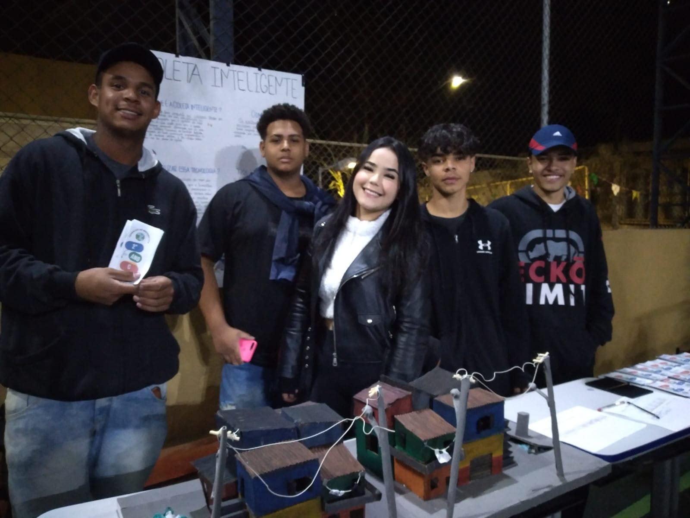
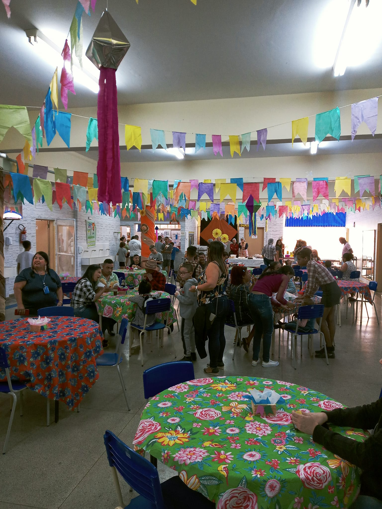

Jornal Botelho
Projeto Sustentabilidade e Tecnologia
TrabaTrabalho de MatemaMatemática

FESTA JUNINA
Festa Junina na Escola Paulo Octavio Botelho: Celebrando Nossa Cultura Brasileira Queridos pais, alunos e comunidade escolar, É com grande alegria que convidamos todos vocês para participar da tradicional Festa Junina da Escola Paulo Octavio Botelho! Neste ano, preparamos um evento especial, repleto de cores, danças, comidas típicas e muita animação para celebrar a rica cultura brasileira. A festa, que acontecerá no dia 25 de junho, será uma oportunidade única para reunir nossos estudantes, familiares e colaboradores em um momento de confraternização e diversão. Nossa escola é conhecida por cultivar tradições e valores, e a Festa Junina é um exemplo clássico disso. As atividades serão realizadas no pátio da escola, que estará decorado com bandeirinhas coloridas, balões e elementos que evocam a atmosfera alegre e acolhedora das festas juninas. Teremos uma grande variedade de barracas com jogos tradicionais, como a pescaria, a argola e o correio elegante, garantindo a diversão de crianças e adultos. Uma das atrações mais esperadas será a apresentação das danças típicas. Nossos alunos, sob a coordenação dos professores, ensaiaram com empenho e dedicação para encantar a todos com as coreografias animadas das quadrilhas juninas. Será um verdadeiro espetáculo de cores, passos sincronizados e muita animação! E, é claro, não poderíamos esquecer das deliciosas comidas típicas. Nossas barracas estarão repletas de quitutes saborosos, como pipoca, canjica, milho verde, caldos variados, além de doces e bolos típicos, como o bolo de fubá e o pé-de-moleque. Não deixem de experimentar essas iguarias que fazem parte do nosso folclore gastronômico! Outro destaque da festa será a quadrilha dos pais, na qual convidamos os familiares dos alunos a participarem e se divertirem como verdadeiros caipiras. Afinal, a Festa Junina é uma oportunidade para estreitar laços e fortalecer os vínculos comunitários, além de proporcionar momentos de alegria e descontração. Contamos com a presença de todos vocês para tornar essa festa inesquecível! Tragam suas famílias, amigos e vizinhos para vivenciarem conosco essa experiência única de celebrar nossa cultura e tradições brasileiras. Não se esqueçam de vestirem trajes típicos, como vestidos de chita, camisas xadrez, chapéus de palha e lenços coloridos. Vamos juntos entrar no clima caipira e contagiar a todos com o espírito junino! Esperamos vocês na Festa Junina da Escola Paulo Octavio Botelho, onde a alegria e a cultura do Brasil se encontram para uma noite memorável. Até lá! Equipe Escolar da Paulo Octavio Botelho